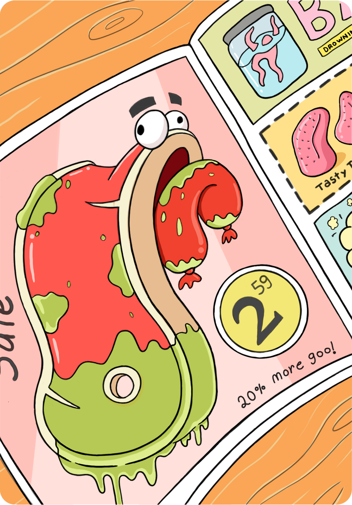

Mr. Makes-A-Word is a fun and colorful word game for iOS. In addition to 13 cooky characters to unlock, the game features over 100 levels that increase in difficulty with the player’s skill.

Ryan Holmes
A game of fun and adventure
Ryan Holmes is short pixel-art game featuring all original artwork. It was made with Unity3D during a university course on game engines.